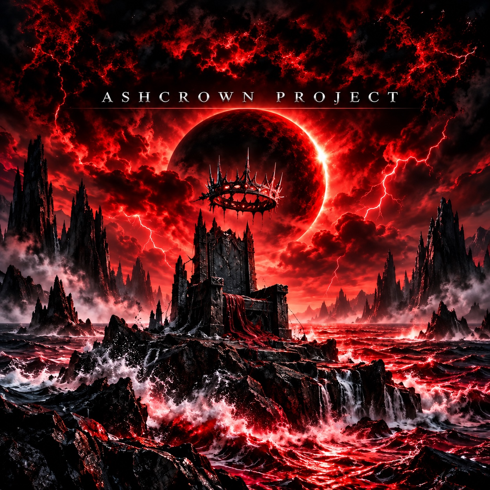
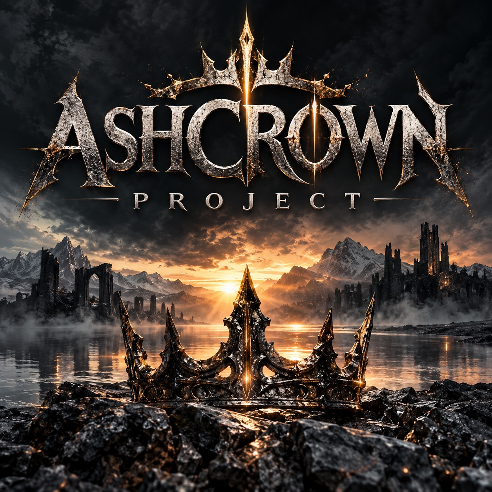

Independent Metal Project · 2026
Ashcrown Project
Dark worlds, powerful crowns, and melodies born in the shadows. Discover Into The Darkness by Ashcrown Project.
Featured Release
Into The Darkness
Blood-red skies, dark ruins, and three tracks that take you into the world of Ashcrown Project.

Bakom kronan
Welcome to the Darkness.
Ashcrown Project is an independent music project with a dramatic, dark, and cinematic atmosphere. Stormy landscapes, royal symbols, and songs with stories of their own come together here.
Into The Darkness opens the door to the world of Ashcrown Project.

Keep Listening
Find Ashcrown Project on SoundCloud
Visit the artist profile to listen to the music and discover the latest releases.
Open SoundCloud ↗